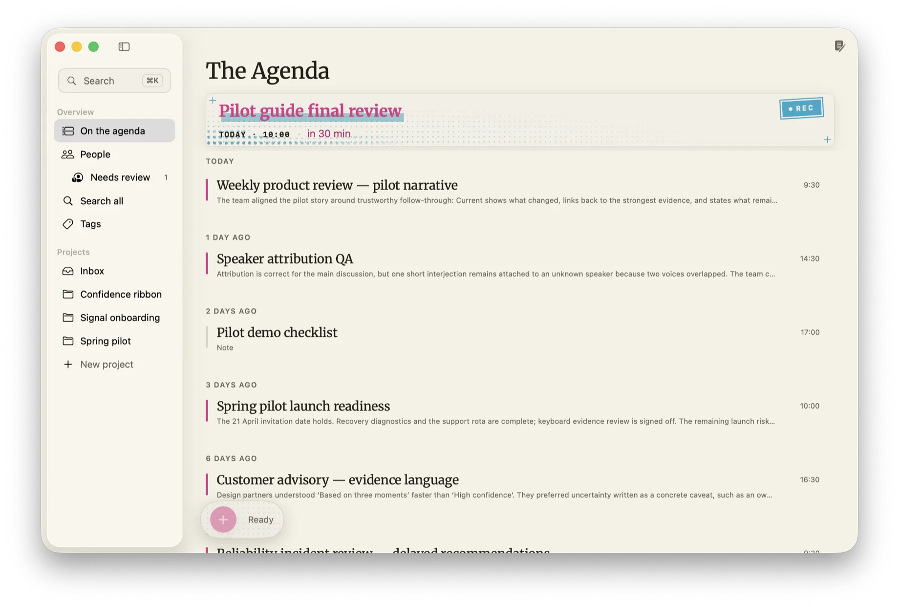

100% on-device
Recorded here. Kept here.
GRØD captures both sides of every call on your Mac and turns the talk into briefings, people, and answers. No cloud. No account. No bot in your call.
GRØD captures both sides of every call on your Mac and turns the talk into briefings, people, and answers. No cloud. No account. No bot in your call.
One button starts the tape. Everything already behind it has been written up and dated without you naming a file, which is why the list reads as what was decided rather than what was said.

GRØD hears your mic, plus the audio your conference app is already playing. Zoom, Meet, Teams, a huddle, a browser tab, or a conversation across the table. Capture, transcription, and speaker separation all run on this machine, and nothing announces itself to the room.

Label a speaker one time and GRØD recognizes them in every meeting, past and future. People become a quiet directory of who you talk to: what's coming up, what you last discussed, every conversation you've shared. Built on your Mac, staying on your Mac.

Nobody re-reads an hour of talk. The moment a meeting ends, GRØD writes the distillation: what was decided, what you owe, what's still open. One calm, editable document, your own notes woven in and never overwritten. Revert is one click.

One shortcut searches every meeting you've ever had, by keyword and by meaning. Ask a question, get an answer with citations, click one, and land on the exact moment it was said. A knowledge base that compounds, without a server in sight.
We can't show you the source, so we show you behavior: switch Wi-Fi off and GRØD keeps working; watch the network and nothing leaves.
"Breathe — that was your last meeting today."
GRØD's actual words when your afternoon empties. Calm is a feature.
GRØD is in pre-launch hardening. The bar for 1.0: "never loses a meeting, and a stranger can install it." If you'd like an early bowl, say hello and we'll keep a place at the table.
Request the beta →No form, no tracker: the button is just email. Fitting, we thought. You'll need an Apple silicon Mac on macOS 26 or later; briefings want Apple Intelligence enabled, recording and transcription work regardless.